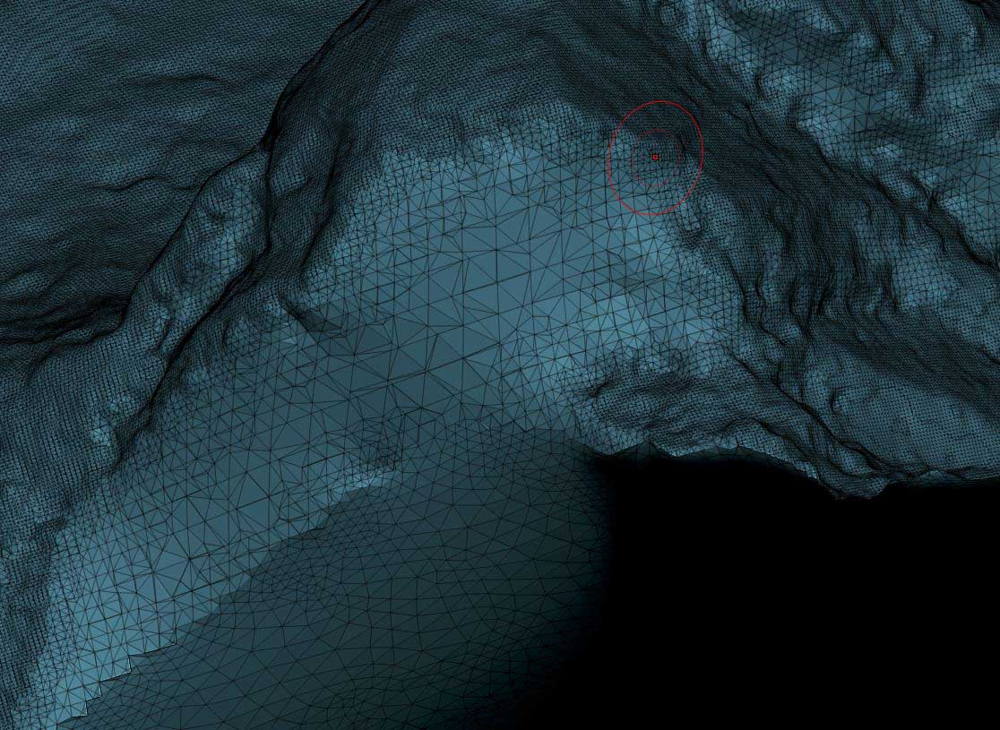
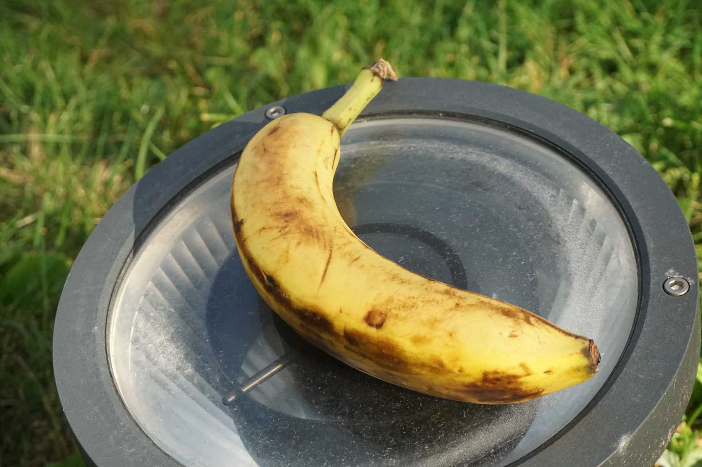
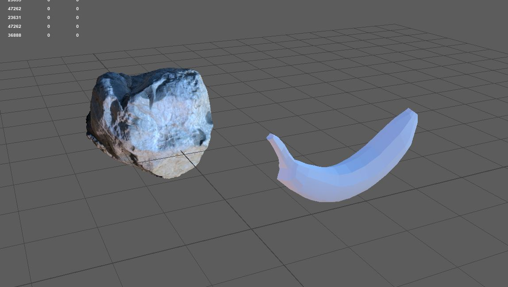
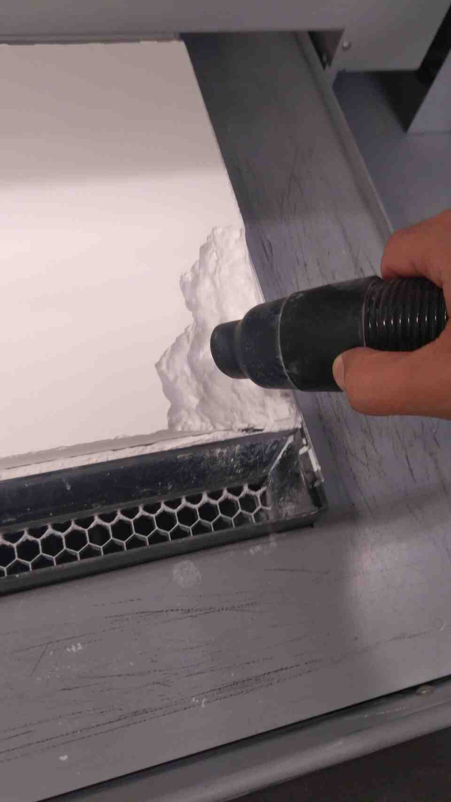

Week 3 - 3D scanning, 3D Printing
3D Scanning, Photogrammetry
There is a really nice rock near Media Lab, and even enough sunlight to shoot sharp pictures. However, lack of clouds leads to harsh shadows which later became an issue.
I shot 41 pictures with a Sony A6000 with the 16-50 mm kit lens at its widest field of view. 1/1000, F 8.0, ISO 256 - 2000. No motion blur, nice sharp focus, and very little to no noise in the shadows. I then took all pictures to Agisoft Metashape, this was my first time using version 1.7.1. The interesting result is that default settings came out far better than my good old workflow.
I deleted the ground and closed the holes in ZBrush. In addition to the bottom of the rock, there were some large holes in the shadow areas, but this is the price to pay when shooting under a clear sky.
I want to get a game asset from this rock, so 11,324,699 polygons is a tad too many. On the other hand, I want to preserve as much of the surface detail as possible. To reduce file size, and preserve details, I decided to bake displacement maps. Since time is limited, I used an automatic retopology and UV unfold workflow.
This is a technique I picked up and modified during my computer graphics career. Zbrush has a dynamesh command that arranges surface topology into quads and triangles of similar scale. ZRemesher creates a topology out of quads with a half-decent edge flow. Both steps result in a lower polygon mesh with lost surface detail. However, a surface made of quads can be subdivided with a Catmull-Clark algorithm, resulting in smooth surfaces and higher polygon counts.
Fortunately, Pixar released their implementation of subdivision as Open Subdiv. So, it is possible to subdivide in different software and get the exact same results. By creating a 2 dimensional representation in UV space, it is possible to transfer all the surface details from a million poly mesh to a megapixel image that need far less memory.
Baking results in a low poly mesh, and a displacement map, which are the ingredients you can use with Open Subdiv and displacement mapping to generate all the detail you want at render time. This is a relatively old-school method, but studios do not like to share their secrets.
I also baked the (pseudo) diffuse reflecation map using xNormal (this is an immensely underrated free software for baking texture maps). It is possible to generate channels for specular reflections and surface roughness from diffuse (results are not accurate technically but are convincing visually).
The above image results from a physically based 4 channel material, and image based lighting. Not too bad for half a day's work.
I tried to also scan a banana, and experimented with placing the fruit on a surface that would be harder to scan.
I hoped that the refractive/reflective base surface would make ground removal easier.
Banana did not comply.
The model was terrible, and had a huge gash, even after combining 2 scans of different sides. Auto retopology does not have an imagination, so I did manual retopology. I had to go completely old school, even unfolding UV's manually
I have a rock, and a banana prop, all in a day's work. So cheers!.
3D Printing & Design
I now have a lightweight rock prop with nice topology, and fine surface detail.
Pixar developed this method to make models easy to deform and animate. So you can do things like this:
By utilizing Maya's deformer channels in parametric design, it is easy to generate crazy forms.
Deformations and symmetry result in shapes that feel organic. So I decided to turn it into a crab with bananas for legs.
I was concerned about the leg connections breaking after 3d printing, so I modified them in ZBrush.
PLA printing was eventless, usual stuff with support cleaning etc. However, I am not satisfied with the lack of detail, especially on the rock surface.

I also wanted to try powder printing. I found out that the resulting prints are far more brittle (broke one of the legs), and that it is a good idea to enamel the prints with epoxy which I have not yet tried. However, details from the rock surfaces are much more pronounced when compared to the PLA prints. Another curious avenue is color printing.

Group Assignment
We printed test files from the CBA website. Overhangs turned out much better than I expected. I am planning to try some supportless printing based on these results.


Files
Low poly model with good topology and UV'sOpen EXR image (32 bit float) with displacement map
P.S. I have gone overboard with data this week (24mb), but there is a multi-million polygon rock in the end, with a 32 bit float displacement map.